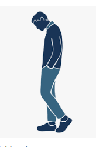

Você é um(a) confeiteiro(a) que está passando por um período complicado em seus negócios. Por sorte te convidaram para uma festa em uma paróquia para vender seus maravilhosos bolos hoje a tarde. O que você vai fazer?

Você chegou cedo à festa e viu muitas barracas que ainda não foram ocupadas. Qual delas você prefere ocupar?
Após algum tempo descansando você se arruma e vai a festa. Ao chegar lá você percebe que todas as barracas foram pegas e que restou apenas uma barraca que fica no fim da festa. O que você irá fazer?
A festa começa e muitas pessoas estão comprando suas mercadorias. Após um longo tempo, a festa acaba e todos vão embora. Os comerciantes das outras barracas começam a organizar suas coisas e ir embora tambem. O que você irá fazer?

A festa começa e poucas pessoas estão comprando suas mercadorias. A celebração acaba e todos estão indo embora. Oque você irá fazer?
Você foi embora
Você foi embora e não vendeu nada
Você foi a missa e ouviu a seguinte passagem da escritura:
Uma grande multidão ia acompanhando Jesus; este, voltando-se para ela, disse: "Se alguém vem a mim e ama seu pai, sua mãe, sua mulher, seus filhos, seus irmãos e irmãs e até sua própria vida mais do que a mim, não pode ser meu discípulo. E aquele que não carrega sua cruz e não me segue não pode ser meu discípulo. Qual de vocês, se quiser construir uma torre, primeiro não se assenta e calcula o preço, para ver se tem dinheiro suficiente para completá-la? Pois, se lançar o alicerce e não for capaz de terminá-la, todos os que a virem rirão dele, dizendo: 'Este homem começou a construir e não foi capaz de terminar'.Ou, qual é o rei que, pretendendo sair à guerra contra outro rei, primeiro não se assenta e pensa se com dez mil homens é capaz de enfrentar aquele que vem contra ele com vinte mil? Se não for capaz, enviará uma delegação, enquanto o outro ainda está longe, e pedirá um acordo de paz. Da mesma forma, qualquer de vocês que não renunciar a tudo o que possui não pode ser meu discípulo.”